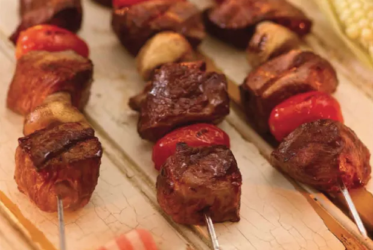

Shish Kebab

This are a summer favorite. Make them outside on the grill or inside in the broiler.
Everyone will want to have seconds.
Ingredients
- 2 pounds beef chuck, cut into 1-inch pieces
- 1 cup teriyaki sauce
- 12 medium white mushrooms
- 12 grape tomatoes
Steps
- Rinse beef, pat dry and place in a bowl.
- Add teriyaki sauce and stir to coat all surfaces of the beef. Place in refrigerator and marinate for at least 1 hour.
- Before preparing skewers, preheat broiler. Lightly grease a large broiler pan with non-stick cooking spray.
- To assemble skewers: Remove beef from marinade. Spear beef and vegetables on each skewer as follows: 1 piece marinated beef, 1 mushroom, 1 piece marinated beef, 1 tomato,
- Place on prepared broiler pan.
- Broil 5 minutes on each side.